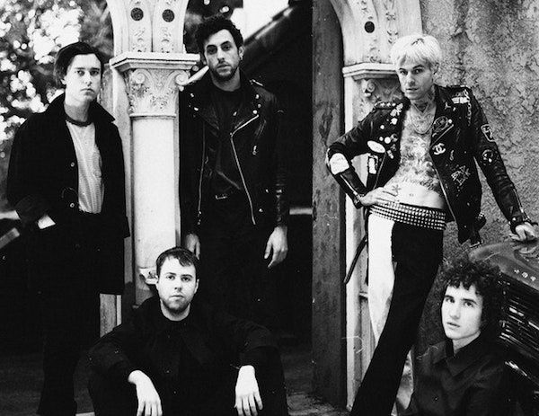

The Neighbourhood to amerykańska grupa rockowa założona w Newbury Park w Kalifornii w 2011 roku.
W jej skład wchodzą wokalista Jesse Rutherford, gitarzyści Jeremy Freedman i Zach Abels, basista Mikey Margott i perkusista Brandon Alexander Fried. Debiutancki album zatytułowany I Love You ukazał się 3 kwietnia 2013 roku, produkcja zadebiutowała na 39. miejscu listy Billboard 200 w Stanach Zjednoczonych.
Najpopularniejsze utwory tego zespołu:
|
 |
|---|
Członkowie zespołu wybrali brytyjski zapis neighbourhood za radą menedżera, aby wyróżnić się na tle zespołu już używającego pisowni amerykańskiej.
Na początku 2012 roku The Neighbourhood wydali Female Roberry i Sweater Weather. W maju 2012 r. zespół zaprezentował debiutancki album Im Sorry... W grudniu 2012 r. The Neighbourhood wydało drugi minialbum: Thank You.
Zespół wystąpił na festiwalu Coachella Valley Music and Arts Festival w 2013 roku, promując ich debiutancki album I Love You, który miał swoją premierę 16 kwietnia 2013, a został oficjalnie wydany 23 kwietnia 2013 roku Columbia Records. Zadebiutował na 39 miejscu na liście 200 albumów w USA Billboard, sprzedając 9000 sztuk w pierwszym tygodniu.